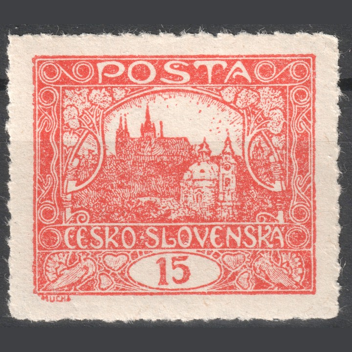
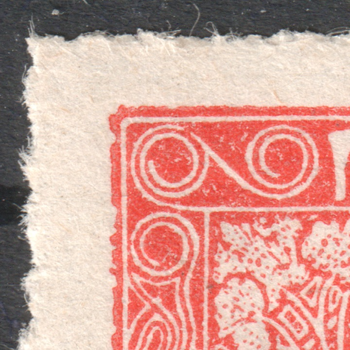

Dentelure
La valeur 15h possède la gamme de dentelures officielles la plus riche de toute l’émission — huit variantes en plus de la forme non dentelée. L’explication des deux modes de perforation se trouve ci-dessous. Les parts reposent sur l’analyse de 21 353 timbres (collection J. Matoušek).
| Code | Dimension et type | Attestée sur les planches | Part dans la statistique |
|---|---|---|---|
| — | non dentelé | Planches I, II, V, VI, VII | 21,2 % |
| A | 13¾ : 13½ en peigne | Planches I–VII | 16,1 % |
| B | 11¾ en peigne | Planches I–VI | 25,7 % |
| C | 13¾ en ligne | Planches I, II, V, VI | 22,2 % |
| D | 11½ en ligne | Planches I, II | 3,5 % |
| E | 11½ : 10¾ en ligne | Planches I, II | 1,0 % |
| F | 13¾ : 11½ en ligne | Planches I, II | 10,3 % |
| G | 11½ : 13¾ en ligne | Planches I, II | — |
| H | 13¾ : 10¾ en ligne | Planches I, II | — |
Les dentelures rares G (11½:13¾) et H (13¾:10¾) ne se rencontrent que sur les planches I et II ; le relevé compte à ce jour 7 exemplaires de G (dont les positions 55, 53, 34, 17, 92/I et 42, 75/II) et 5 exemplaires de H (paire 97+98/I, paire nouvellement trouvée avec oblitération Turnov, et 84/I).
Les irrégularités de position de la perforation par rapport au dessin — y compris les pièces où la dentelure traverse le dessin — sont décrites dans la section Décalage de dentelure de la page Défauts de fabrication.
Comment la dentelure est faite — en ligne et en peigne
La dentelure est une rangée de trous percés dans la feuille là où les timbres doivent être séparés. Deux modes de perforation différents ont été employés pour l’émission Hradčany, et la différence entre eux se voit avant tout aux angles du timbre.
Dentelure en ligne
- La machine possède une seule rangée d’aiguilles et ne perce à chaque fois qu’une seule ligne droite à travers toute la feuille.
- La feuille avance peu à peu et est percée ligne après ligne dans un sens ; ensuite elle est tournée et l’autre sens est fait de la même manière.
- Les lignes horizontales et verticales naissent indépendamment les unes des autres et ne se rejoignent donc pas dans les angles — les trous se manquent, se doublent, ou bien il en manque un dans l’angle.
- Le pas des deux directions peut différer, car un autre outil ou une autre machine les a faites — d’où des combinaisons comme 13¾ : 11½ et sa forme inversée 11½ : 13¾.
- Le nombre de dents d’un même côté varie donc d’une pièce à l’autre, et la dent d’extrémité est souvent incomplète.
Pour le 15h : C, D, E, F, G, H — le procédé le plus ancien, planches I, II, V, VI
Dentelure en peigne
- L’outil a la forme d’un peigne : une longue rangée horizontale d’aiguilles portant des dents courtes perpendiculaires qui s’insèrent entre les timbres.
- Une seule course perfore donc d’un coup trois côtés de toute une rangée de timbres — la ligne supérieure et toutes les séparations verticales situées au-dessous.
- La feuille avance d’une rangée et la course se répète ; la dernière course ferme le bord inférieur.
- Comme la perforation horizontale et la perforation verticale naissent d’une même frappe, un seul trou commun se trouve dans l’angle et l’angle est net.
- Le nombre de dents est le même sur tous les timbres de la rangée et la dimension est constante.
Pour le 15h : A (13¾ : 13½) et B (11¾) — le procédé plus tardif, planches I–VII
Comment les reconnaître sur un timbre
- L’angle est décisif. Un trou régulier exactement dans l’angle = peigne. Un angle déchiqueté avec deux trous qui se recouvrent, ou au contraire avec un trou manquant, = ligne.
- Comparez les côtés opposés. En peigne, tous les timbres d’une même rangée ont le même nombre de dents ; en ligne, le nombre comme la position des dents se déplacent d’une pièce à l’autre.
- Mesurez au odontomètre. Le chiffre indique le nombre de dents sur 2 cm ; la première valeur vaut pour les côtés horizontaux, la seconde pour les côtés verticaux. Quand une seule valeur est donnée, les deux côtés sont identiques.
- Une paire ou une bande aide. Sur un multiple, on voit toute une suite d’angles d’un coup et la différence entre un tracé régulier et un tracé irrégulier est impossible à manquer.
Attention à la confusion : en dentelure en peigne aussi, deux courses voisines peuvent se manquer légèrement. L’irrégularité ne se situe alors qu’à la limite entre deux rangées, tandis qu’à l’intérieur de la rangée les angles restent nets — en dentelure en ligne, au contraire, chaque angle est irrégulier.
Comment le catalogue Pofis enregistre les dentelures
Le catalogue spécialisé classe les timbres de l’émission par dentelure en groupes désignés par des majuscules. Le numéro de catalogue se forme en associant le numéro de base de la valeur à la lettre du groupe ; la valeur 15h porte le numéro de base 7, si bien que ses variantes dentelées vont de 7A à 7H. À l’intérieur de chaque entrée, les nuances sont notées par les lettres minuscules a), b), c), d).
- HZ — dentelure en peigne (hřebenové zoubkování)
- ŘZ — dentelure en ligne (řádkové zoubkování)
- OHZ — dentelure en peigne inversée, c’est-à-dire un peigne progressant de bas en haut au lieu du sens habituel de haut en bas. Elle n’est pas mentionnée pour le 15h ; le catalogue la signale à d’autres valeurs (5h, 20h, 25h, 30h).
- La dimension s’écrit horizontal : vertical. Quand un seul chiffre est donné, les deux paires de côtés ont le même pas.
| N° cat. | Groupe | Notation du catalogue | Type |
|---|---|---|---|
| 7A | A | HZ 13¾ : 13½ | en peigne |
| 7B | B | HZ 11¾ | en peigne |
| 7C | C | ŘZ 13¾ | en ligne |
| 7D | D | ŘZ 11½ | en ligne |
| 7E | E | ŘZ 11½ : 10¾ | en ligne |
| 7F | F | ŘZ 13¾ : 11½ | en ligne |
| 7G | G | ŘZ 11½ : 13¾ | en ligne |
| 7H | H | ŘZ 13¾ : 10¾ | en ligne |
Les lettres A–H du tableau en tête de page sont précisément ces groupes de catalogue — la notation de ce site coïncide donc avec celle du catalogue. La valeur 15h est le seul timbre de l’émission représenté dans les huit groupes A–H ; outre le 15h, le groupe G ne comprend que le 30h et le groupe H que le 25h.
Dentelures exceptionnelles (I et L)
Au-delà des huit groupes ordinaires, le catalogue tient une section distincte, Dentelures exceptionnelles. Il s’agit de pièces sur lesquelles se sont rencontrés deux passages de perforation différents — la feuille a été perforée en partie avec un outil et achevée avec un autre, si bien que les différents côtés d’un même timbre portent des dentelures différentes. Deux d’entre elles concernent la valeur 15h : les groupes I et L. Les autres dentelures exceptionnelles (groupes J et K) ne sont mentionnées par le catalogue que pour la valeur 30h du cinquième dessin, qui n’a pas sa place sur ce site.
| Groupe | Notation du catalogue | Type | Timbre |
|---|---|---|---|
| I | ŘZ 13¾ : 11½ + 10¾ | mixte | 7I — 15h rouge brique |
| L | ŘZ 13¾ + 11½ : 11½ | composée | 7L — 15h rouge brique |
Composée et mixte — en quoi elles diffèrent
La différence ressort directement de la notation. Dans une dentelure composée (L), deux dentelures différentes se rencontrent sur un même timbre — pour le 15h, deux pas différents du même type, 13¾ et 11½ sur les côtés horizontaux opposés. Dans une dentelure mixte (I), trois pas différents se rencontrent sur un seul timbre : 13¾ à l’horizontale, 11½ sur un côté vertical et 10¾ sur l’autre.
Les deux variantes du 15h sont liées à la dentelure en ligne des planches précoces I–II, où les pas 13¾, 11½ et 10¾ se rencontraient le plus souvent au sein d’une feuille — c’est la même situation de fabrication qui explique les rares dentelures G et H.
Percé privé, en lignes et en points
L’émission a d’abord paru non dentelée et les timbres devaient être détachés de la feuille aux ciseaux. Là où on les maniait en quantité, on s’aidait parfois soi-même : entre les timbres, on perçait ou piquait une ligne de séparation pour pouvoir les déchirer. Une telle séparation est privée — elle n’a rien à voir avec la fabrication du timbre et le catalogue ne la range pas parmi les dentelures.
Un percé en lignes est une coupure : une lame — droite, ondulée ou dentelée — traverse le papier sans rien en enlever. Un percé en points est une rangée de petites piqûres faites à l’aiguille ou à la roulette à pointes. Dans aucun des deux cas il ne se forme de trou : après déchirure, il ne reste donc pas de dents aux morsures rondes, mais un bord ondulé ou en dents de scie aux fibres effilochées, ou encore une file de courtes fentes.


Comment le distinguer d’une vraie dentelure
- Aucun trou rond. L’aiguille de perforation découpe le papier et la rondelle tombe ; le percé, en lignes comme en points, ne fait que diviser le papier, si bien qu’il ne manque nulle part de matière entre les dents.
- Le bord est fibreux. Les dents sont peu profondes et d’inégale hauteur, et des filaments de papier subsistent le long du bord — le papier a fini de se déchirer le long de la coupure.
- La dentelure ne correspond à aucun groupe. L’odontomètre donne une valeur intermédiaire, qui varie de surcroît d’une pièce à l’autre et même d’un côté à l’autre.
- La ligne est guidée à la main. Elle n’est souvent présente que sur certains côtés, s’écarte légèrement de la verticale ou ne se rejoint pas dans l’angle — une machine l’aurait menée droit et sur toute la feuille d’un coup.
Le timbre reste non dentelé. Un percé privé, en lignes ou en points, est une curiosité et non une variété de catalogue ; il n’entre pas dans les statistiques de dentelure. Et comme il peut être fait à tout moment, aujourd’hui encore, la pièce qui compte est celle dont la séparation est attestée par un usage d’époque — une lettre, ou une oblitération qui franchit le bord.
Défauts de perforation
Au-delà des groupes du catalogue, il existe des pièces sur lesquelles la perforation ne s’est pas déroulée comme prévu — l’outil est passé deux fois par le même intervalle (double dentelure), ou bien une rangée a totalement manqué et les timbres ont dû être séparés aux ciseaux (dentelure omise). Ce ne sont pas des dentelures à part entière, mais des défauts de fabrication : le pas reste le même et le timbre se détermine d’après la rangée correspondant au passage régulier. La description des deux défauts, les illustrations des échantillons ainsi que la section sur le décalage de dentelure par rapport au dessin se trouvent sur la page Défauts de fabrication.
Usages attestés les plus précoces
Sur 6 752 oblitérations lisiblement datées. L’ordre montre comment la production est passée des dentelures linéaires D/E/F sur les planches anciennes aux dentelures en peigne A/B sur les planches plus tardives.
| Dentelure (planche) | Date la plus précoce |
|---|---|
| D (planches 1–2) | 30. 6. 1919 |
| E (planches 1–2) | 8. 8. 1919 |
| F (planches 1–2) | 12. 9. 1919 |
| C (planches 1–2) | 9. 11. 1919 |
| B (planches 1–2) | 30. 12. 1919 |
| B (planches 5–6) | 8. 2. 1920 |
| G (planches 1–2) | 18. 2. 1920 (Praha 1) |
| C (planches 5–6) | 22. 2. 1920 |
| A (planche 7) | 1. 3. 1920 |
| H (planches 1–2) | 15. 3. 1920 (Turnov) |
| B (planche 4) | 23. 3. 1920 |
| A (planches 5–6) | 25. 3. 1920 |
| A (planches 1–2) | 2. 4. 1920 |
| B (planche 3) | 19. 4. 1920 |
| A (planche 3) | 27. 4. 1920 |
| A (planche 4) | 8. 6. 1920 |
Comparaison de trois collections
Les parts des dentelures diffèrent entre les grandes collections et les données de la Monographie — voir les statistiques.